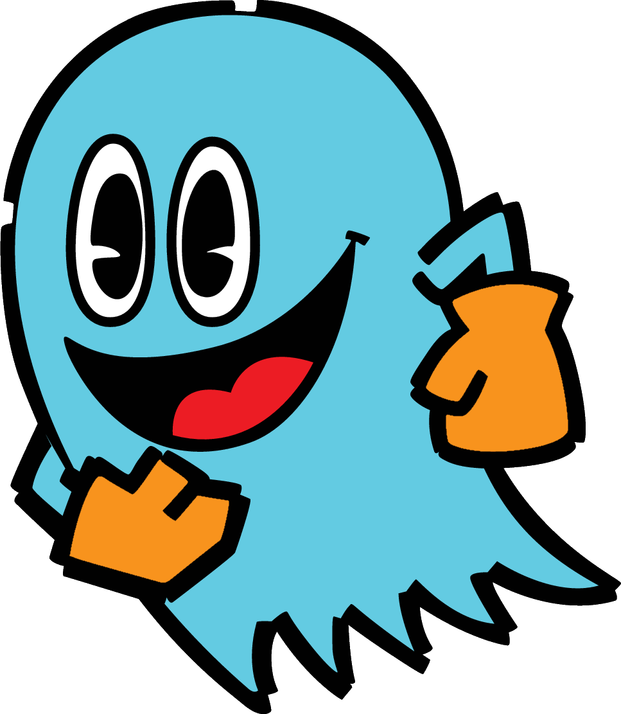

Inky
Inky (インキー Inki), also known as Aosuke, is one of the four main ghosts in the Pac-Man series. He is often depicted as a goofy and slow-headed ghost, not pursuing Pac-Man unless other ghosts are near. He is good friends with Blinky, Pinky, and Clyde.
While originally one of the main antagonists in the first Pac-Man arcade game, his role has changed to being just a secondary antagonist or even an ally in recent iterations.
Characteristics
Appearance
Inky is a cyan (blue) colored ghost. He has big eyes, and often has a happy/excited expression. He is typically limbless within games, but some incarnations show him with arms, sometimes with gloves as well (either orange or teal-colored).
In the TV series Inky wears a hat, and in Pac-Land he has a spot of hair. Both of these portrays show Inky as being stupid (a role more commonly filled by Clyde). In Pac-Man Party and Ghostly Adventures, Inky has little to no resemblance to his original design; he is very skinny, has twirly hair, and teeth. He is also a darker shade of blue, and is portrayed as being the smartest of the four ghosts.
Personality
Inky's personality is pretty straightforward; He's goofy, and usually doesn't fully think things through. This often makes him appear a bit dimwitted, but not as much as Clyde. Inky is typically the funny and mellow ghost who tries to remain cool - but he fails to keep his cool when scared or scolded by his fellow ghosts.
In Pac Man and the Ghostly Adventures Inky is mischievous and immature as well as goofy. He often quarrels with Pinky and Blinky.